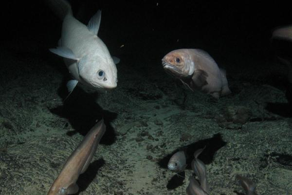

Les baleines à bec sont des odontocètes de la famille des Ziphiidae qui ne mesurent que quelques mètres, et la baleine de Cuvier (Ziphius cavirostris), qui n'a d'ailleurs pas de bec, n'est donc pas non plus vraiment une baleine. Dans cette même famille, on notera que l'emploi du terme « baleine » pour désigner par exemple un mesoplodon ou un hyperoodon n'est pas usité en français (on utilise celui de « cétacé » à défaut d'être plus précis). L'expression « baleine blanche » peut quant à elle faire référence3 au monodontidé Delphinapterus leucas (le béluga). Mais elle est ambiguë parce qu'elle évoque également un animal quasiment mythique incarné notamment par le cachalot albinos du roman Moby Dick. En revanche, celle de pour en savoir plus « baleine pilote » appliquée aux globicéphales et celle de « baleine tueuse » aux orques et fausses orques, sont douteuses : ces trois espèces sont des delphinidés, leur emploi ne correspond à aucun usage établi4,5 et n'est apparu que récemment dans certaines traductions erronées de sources documentaires ou scientifiques anglo-saxonnes : en anglais, le terme « whale » (baleine) peut en effet désigner toutes sortes de cétacés, mais pas en français. En outre, il arrive aussi qu'on parle de baleines pour désigner indistinctement les cétacés qui peuvent faire, ou qui ont fait, l'objet d'une chasse baleinière. Enfin, on utilise souvent le terme « baleine » pour parler d'un cétacé que l'on n'a pas identifié précisément mais qui, au jugé, a l'air plus gros qu'un dauphin (ce qui est assez vague compte tenu qu'un grand dauphin comme l'orque par exemple, est plus gros qu'une petite baleine comme la baleine de Minke).
